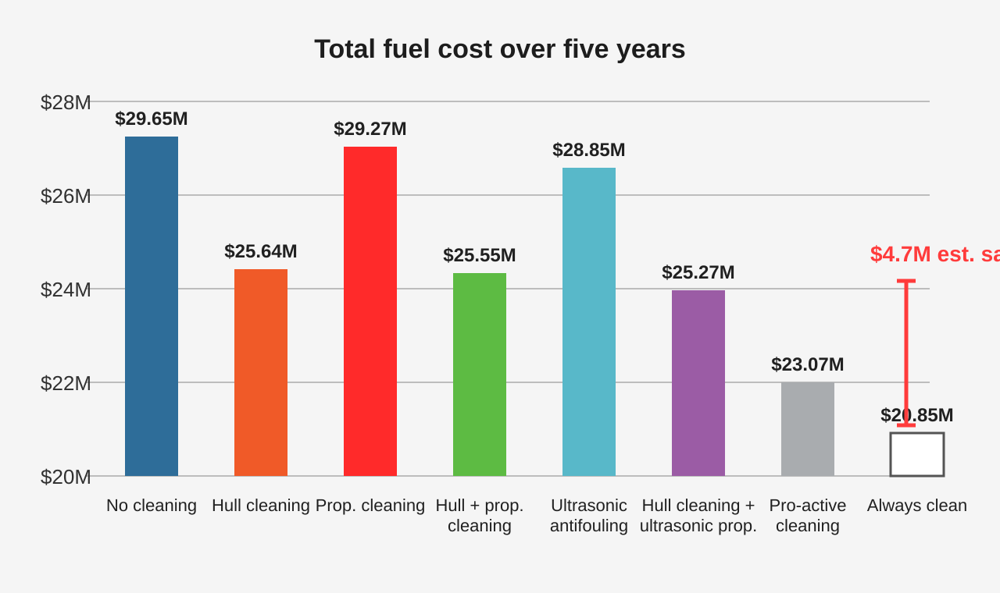
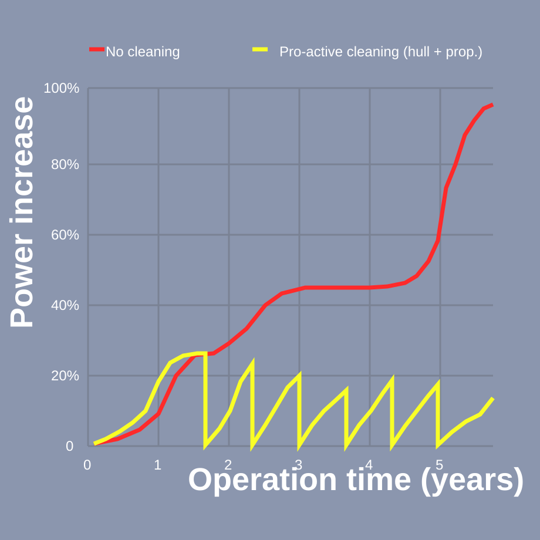
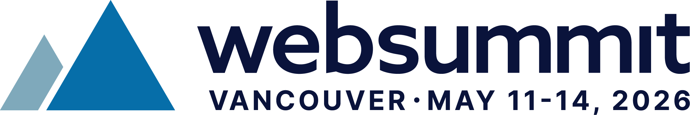
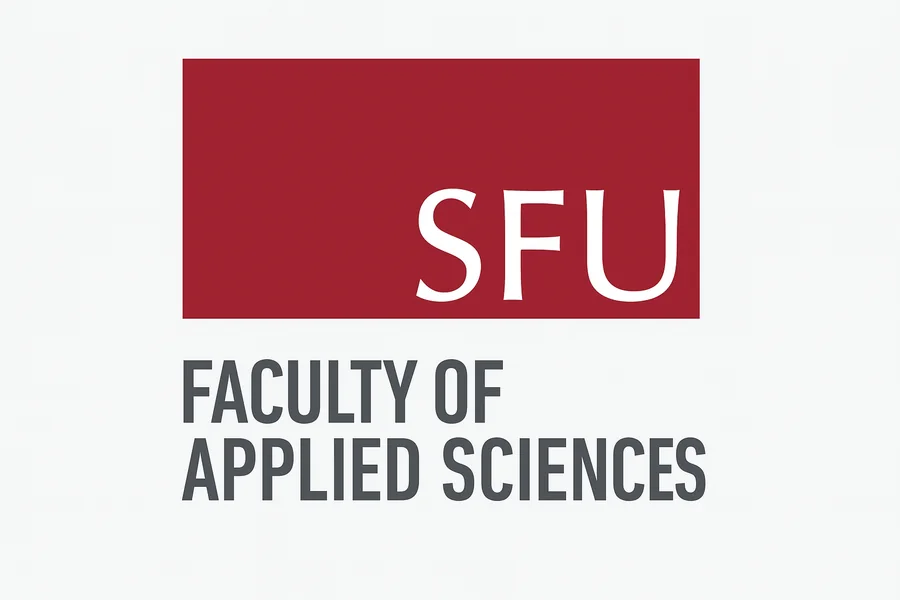
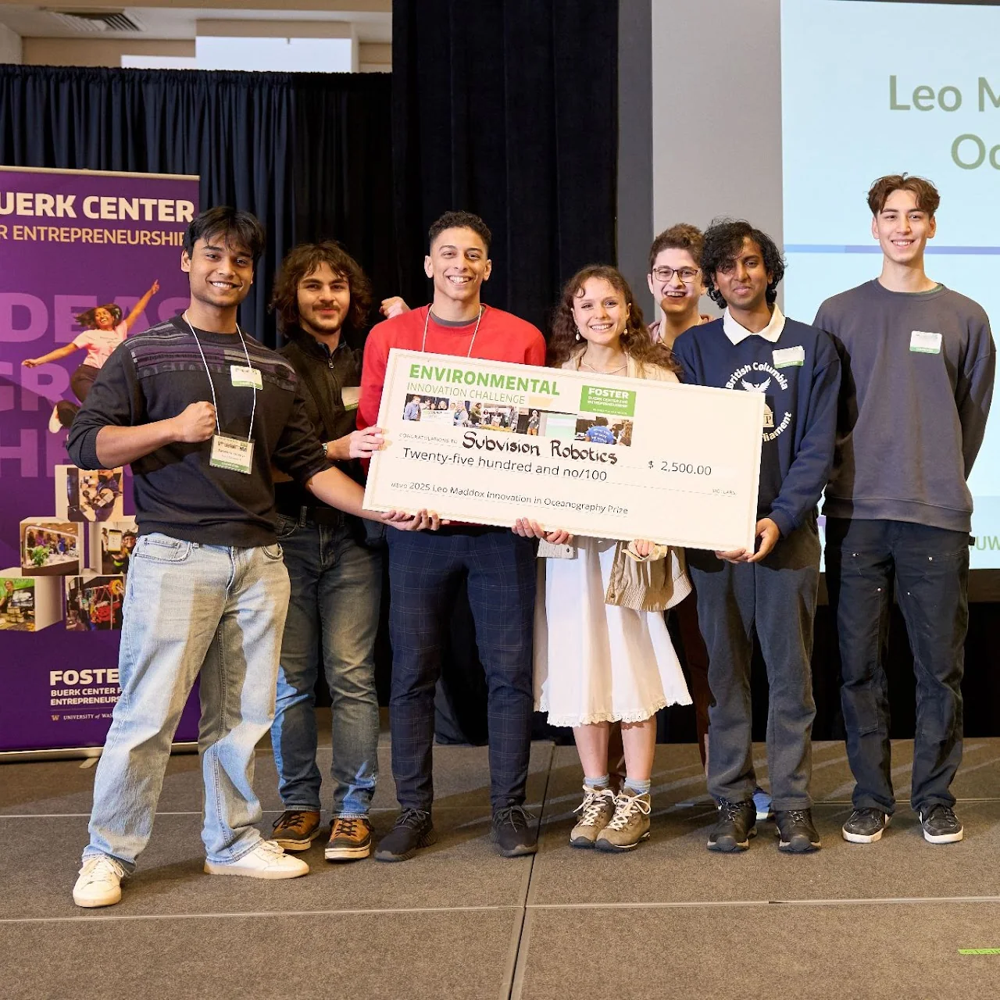

Five-year fuel cost view

Five-year fuel-cost comparison showing why staying closer to an always-clean hull matters.
Image credit: GEF-UNDP-IMO GloFouling Partnerships Project (2022)
Impact and partners
The case for ZIMA is simple: cleaner hulls can mean lower fuel burn, less pressure for harsh intervention, and fewer opportunities for invasive transfer. This page combines the operating case with the support ecosystem already helping Subvision move toward pilots.

Why proactive maintenance matters
These reference graphics show why frequency matters. When fouling is allowed to build, cost and power demand rise. When the hull is kept closer to a clean baseline, the operating penalty stays lower.

Five-year fuel-cost comparison showing why staying closer to an always-clean hull matters.
Image credit: GEF-UNDP-IMO GloFouling Partnerships Project (2022)

Power demand climbs as fouling builds. More frequent intervention keeps resetting the curve.
Image credit: GEF-UNDP-IMO GloFouling Partnerships Project (2022)


Featured support story
 Ocean Startup Project has been a major early validator for Subvision.
Ocean Startup Project has been a major early validator for Subvision.
Support through Ocean Idea Challenge and Ocean Startup Challenge helped move Subvision from early concept work into a stronger venture and prototype path.
Partner ecosystem
Early venture and program support that helped turn concept work into a stronger company path.

Non-dilutive backing that supported the venture-building side of the program.

Technical backing that strengthened the prototype program and the engineering base behind it.

Public recognition that reinforced the project’s environmental relevance and visibility.

Community support that helped the team grow, build, and showcase the system.
A public showcase moment that validated how the project lands in entrepreneurial settings.
What support unlocks
Funding and partnerships matter when they shorten iteration cycles, create stronger test opportunities, and open the right pilot conversations.
More support means faster iteration and stronger hardware hardening.
Programs and partners create better chances to test, demo, and communicate the system in credible settings.
The right introductions help translate engineering progress into pilot conversations.



Get involved
Subvision is looking for support that moves the product forward in real ways: technical collaboration, test access, pilot planning, and market entry.